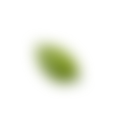
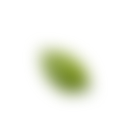

苗栗縣政府環境保護局
meuˇ lid ien ziin fuˋ fanˇ gin boˋ fu kiug
meuˇ lid ien ziin fuˋ fanˇ gin boˋ fu kiug
空氣品質即時監測
苗栗
AQI 空氣品質指標 0
O3 (ppb) 臭氧/小時濃度 0
PM2.5 (μg/m3) 細懸浮微粒/小時濃度 0
PM10 (μg/m3)懸浮微粒/小時濃度 0
空氣品質 --空氣品質即時監測
頭份
AQI 空氣品質指標 0
O3 (ppb) 臭氧/小時濃度 0
PM2.5 (μg/m3) 細懸浮微粒/小時濃度 0
PM10 (μg/m3)懸浮微粒/小時濃度 0
空氣品質 --空氣品質即時監測
三義
AQI 空氣品質指標 0
O3 (ppb) 臭氧/小時濃度 0
PM2.5 (μg/m3) 細懸浮微粒/小時濃度 0
PM10 (μg/m3)懸浮微粒/小時濃度 0
空氣品質 --更新時間：2022/04/13 10:00:00
土水環境要守護
naiˇ suiˋ kuanˇ gin oi suˋ fu
土淨水清永傳承
naiˇ qiang suiˋ xienˊ iunˋ conˇ siinˇ
公害污染陳情網路受理系統
烏賊車檢舉、噪音車檢舉、重大水質及事業廢棄物污染，皆可受理。歡迎民眾踴躍使用，個人資料依個人資料保護法相關規定嚴格保密。
PAGE UP
FOLLOW US
 
